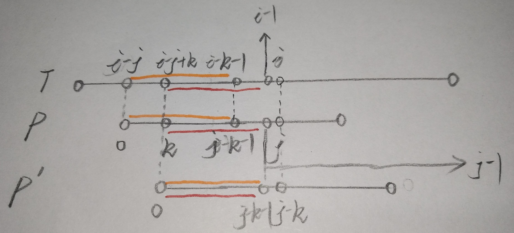

（以下，将目标字符串称为 T ，将模式字符串称为 P ，|A|为字符串A的长度）
字符串匹配问题
字符串的模式匹配算法大致有以下几种：
- 朴素的模式匹配算法（又叫 Brute Force 算法，以下简称 BF）
- KMP模式匹配算法（以下简称KMP）
- Horspool算法
- Boyer-Moore算法
- Sunday算法
- RK算法
- 字符串匹配自动机
- 后缀树算法（分在线和非在线两种）
- 对于多模式字符串匹配有：AC算法（字符串匹配自动机思想）、WM算法（BM算法在多模式的推广应用）
在这里主要说明KMP和BP，对于其他算法以后再做了解。
- BF
简单粗暴地对于 T 上的每一个（除了最后的|P|-1个）字符，都对 P 扫描一遍
这种算法简单，但时间复杂度过高，最差的情况需要O(|T||P|)的代价
- KMP
这种算法相对复杂，但时间复杂度低，其时间代价为O(|P|+|T|)，且当T长度远小于P长度时，基本上为O(|T|)
下面说明KMP算法。
KMP的大致思想
- KMP算法由Knuth、Morris、Pratt等人创造，其本质在于将BP中
没有必要的比较去掉，且P的右移与T无关，仅依赖于P本身的特征。

由图可知，当遇到匹配失败的情况时，BP直接将P右移一位，重新扫描P，但这样效率极为低下。若直接将P移至P(i+1)的位置，则极有可能会错过P’的情况；即，在T上，有字符串
(i-j)~(i-k-1)和字符串(i-j+k)~(i-1)相等，那么此时极有可能找到从T(i-j+k)位置开始的P’。所以，KMP的主要目的就是找到可能存在的P’。同时，应保证k为最小，即相等的字符串应尽可能地长。而后不断进行迭代。由图可知，字符串
T(i-j)~(i-1)与字符串P(0)~(j-1)必定相等（因为前面已经扫描过了）。所以，我们只需要知道和橙色字符串P(0)~(j-k-1)相等的红色字符串P(k)~(j-1)是否存在，且其位置如何。
P的特征向量
P的特征向量为一个大小为|P|的int型数组，其元素为特征值，且对应P上的字符。由
特征二字可知，特征向量是反映P的字符串特征的一种表示，其与线性代数中的特征向量没有关系，特征值同样。下面将通过举几个例子来说明特征值和特征向量的意义。对于下面的字符串，其特征向量为：
| a | b | a |
|---|---|---|
| 0 | 0 | 1 |
| a | b | a | b |
|---|---|---|---|
| 0 | 0 | 1 | 2 |
| a | b | a | b | a | b | b | b | b | a | b | a | b | a | b | a | b | a | b |
|---|---|---|---|---|---|---|---|---|---|---|---|---|---|---|---|---|---|---|
| 0 | 0 | 1 | 2 | 3 | 4 | 0 | 0 | 0 | 1 | 2 | 3 | 4 | 5 | 6 | 5 | 6 | 5 | 6 |
- 由上面的字符串及特征向量可知：
- P[0]的特征值必定为0
- 往后的字符P[j]的特征值i：
1.若
i == 0，说明该字符与P[0]不同
2.若i != 0，说明该字符与P[i-1]相同或者说该字符的下一个字符与P[i]相同（这就是为什么大多数KMP求特征向量的那个数组或函数叫做next），同时字符串P(0)~(i-1)和字符串P(j-i+1)~(j)相等，即有相等子串
- 在清楚了字符串的特征值和特征向量的含义后，我们先把如何求特征向量先放一边，先看在已有P的特征向量的情况下，如何找到T中的子串。
已知特征向量 求子串
- 先上代码：
1 | int KMPStrMatching(const string T, const string P,const int *N,const int startIndex) { |
while循环的分析：
- 若
j == 0，说明此时j指向P的首字符，只需要比较即可，即 if (P[j] == T[i]) - 若
j != 0，说明此时j指向的不是P的首字符- 若
P[j] == T[i]，则只需要继续往后面比较即可 - 若
P[j] != T[i]，则此时进入while循环，寻找是否存在P’（见 KMP的大致思想 部分）
- 若
语句 j = N[j - 1]; 的分析：
- 由于此时 j指向的不是P的首字符 且
P[j] != T[i]，则此时需要将P右移，即，将j左移。 - 可知
P[j-1] == T[i-1]，则先将 j-1 - 由前面P的特征向量部分可知
- 若
N[j-1] == 0，说明此时必定不存在P’，故直接将j置零，即，将P直接移到首字符 - 若
N[j-1] != 0，说明此时有可能存在P’，则将j置为N[j-1]，即，将P移到可能存在的P’的位置，然后再比较可能不同的那个字符，即比较P[j]和T[i]；注意，再while循环的过程中i是未发生变化的
- 若
- 这个时候你可能会想，如果P[j]和T[i]是相等的还行，那如果要是不相等呢？那么这个时候，你会发现P已经后移了，其实就已经开始了另一轮匹配，这就是迭代。
求特征向量
好了，相信这个时候你对KMP的算法实现应该有了一定的了解。
但我们还有另外一个问题没有解决：如何求特征向量。事实上求特征向量的算法和上面求相等子串的算法都是同一种算法——KMP。
这个时候，T和P相等，但我们的startIndex（开始查找的位置）设为固定的1。
这个时候你可能又会问，这样根本找不到相等的子串啊？！没错，但是我们的目的不是为了找相等的子串，而是为了探索P的特征，即在P[1]后（含P[1]）找到和从P[0]开始的子串相等的最长子串，同时将其记录到next（或N）数组中。所以，next数组实际上是对P的数字化描述。同时，在对next数组顺序填充时，空着的位置的特征值只与前面已经填好的位置的特征值有关，这个从求子串时的操作就可以看出。
下面贴代码：
1 | int *Next(const string P) { |
总结
综上，你会发现，KMP其实并不难，关键在于while循环的理解。而while循环本质上是不断地迭代，同时 j= N[j - 1]; 这一语句将几步操作融合在了一起。
不得不感叹算法的奇妙啊！